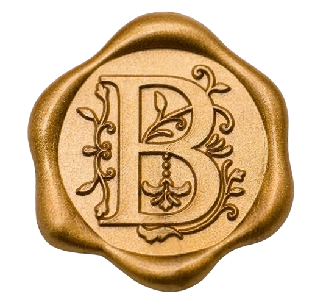

Remover Selo
Amor,
Hoje é o Dia da Mulher, e eu não podia deixar essa data passar sem te dizer o quanto você dá significado a ela. O mundo admira a força das mulheres, mas eu tenho o privilégio de ver essa força de perto em você. É incrível como você é destemida e decidida; você sabe onde quer chegar e briga pelo espaço e pelo respeito que merece. E enquanto você busca o seu lugar no mundo, quero que saiba que, no meu coração, você já é a número um, sem dúvida nenhuma.
Sabe, antes de você chegar, parece que eu vivia num lugar onde as pessoas raramente diziam o que sentiam de verdade. Era tudo meio vazio. E aí, do nada, nosso encontro aconteceu daquele jeito inesperado, e a nossa aproximação foi a combinação mais perfeita que eu já vi. Estar do seu lado me dá uma paz enorme, porque eu sinto que posso te falar qualquer coisa e vou ser compreendido e amado.
Eu passei muito tempo correndo em círculos, procurando por algo que eu nem sabia explicar, como se estivesse perseguindo um sonho de perfeição que parecia distante. Mas aí, sem que eu esperasse, eu caí no conforto do seu toque e a minha procura parou. Quando você me conta do seu dia e do seu trabalho, me sinto cada vez mais parte da sua vida, como se você estivesse me aceitando como parte de si mesma. Eu amo esse seu jeito meigo de enxergar as coisas, mas confesso que esse seu lado um pouco "louco" – igual ao meu – é o que me faz me apaixonar mais a cada dia.
É engraçado como esse seu jeito meigo esconde uma determinação que pouca gente nota de primeira, mas que eu tenho o privilégio de observar todos os dias. Eu vejo como você busca o seu espaço, querendo ganhar o conhecimento e o respeito necessários para estar onde você realmente merece, sem nunca aceitar menos do que o seu potencial permite. Adoro como você compartilha suas metas comigo, me fazendo sentir que pertenço à sua história tanto quanto você pertence à minha. Mesmo quando o cansaço bate ou os desafios parecem grandes, a sua postura decidida me mostra que você não é apenas uma mulher incrível hoje, mas alguém que vai transformar cada sonho em realidade. Conto cada hora para te ver, porque estar ao seu lado transforma qualquer problema em algo pequeno diante da imensidão que você carrega. Você é a prova de que a delicadeza e a coragem podem morar no mesmo sorriso, e é por isso que minha admiração por você só faz crescer conforme o tempo passa.
Estar com você é como ter encontrado um lugar onde o amor é a única regra que importa, um refúgio que vai muito além de qualquer explicação. Te ver conquistar suas vitórias e observar o potencial gigante da mulher que você está se tornando me dá um orgulho que não cabe em mim. Se você decidir ir mais longe, se quiser levar a vida para um nível ainda mais alto, eu vou estar logo atrás de você, te apoiando em cada passo, porque ao seu lado as barreiras caem e nada parece impossível.
Eu te observo desde aquele nosso primeiro dia, há um ano, e conto as horas pra te ver. Os dias longe são difíceis, mas quando a gente está junto, todos os problemas simplesmente desaparecem. Você é tudo o que eu sempre sonhei e, às vezes, até me custa acreditar que tenho tanta sorte de você ser real.
Não é por acaso que o seu aniversário é 10/10. O destino já deixou o aviso: você é a perfeição em todos os sentidos, a minha mulher nota dez. Eu quero partilhar a vida inteira com você, sem precisar pensar duas vezes, porque com você tudo está exatamente como deveria estar.
Então, vem cá... deixa eu te encher de carinho e te dar um, dois, três... quantos beijos você deixar, só pra te mostrar que você é, e sempre vai ser, a mulher da minha vida.
Sempre seu, B.
Feliz Dia das Mulheres. Eu amo muito você!!!
Toque na carta para fechar